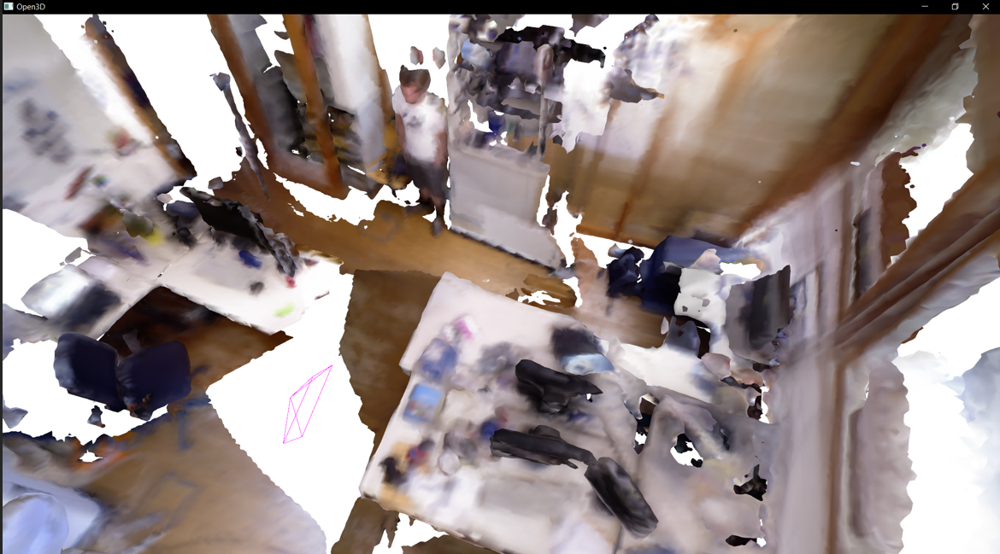
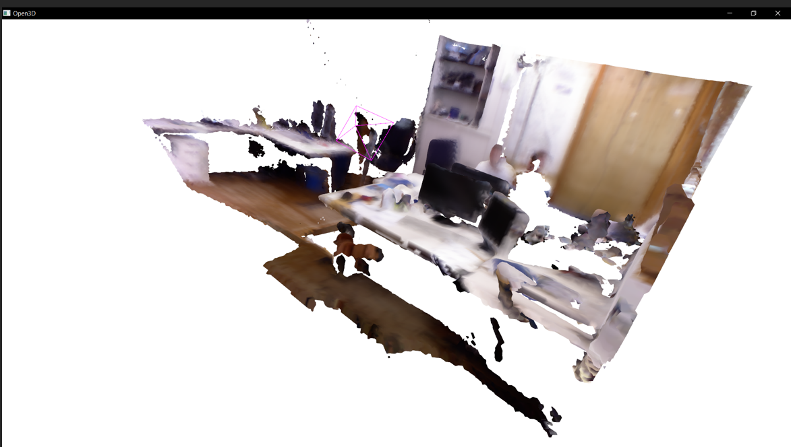
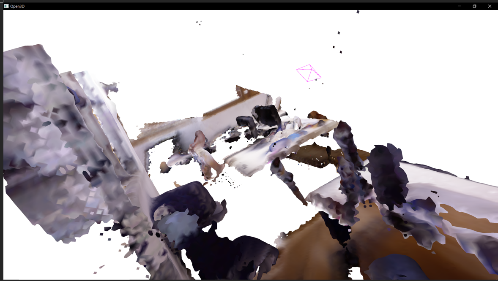
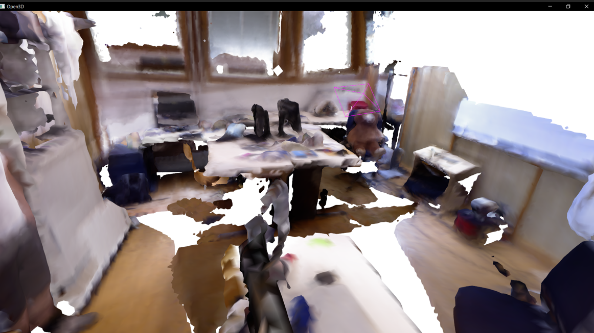

Project
This project implements a real-time 3D reconstruction pipeline in the spirit of the classic KinectFusion paper. A Microsoft Kinect streams depth and RGB frames while the system fuses them into a volumetric model that is displayed as a live 3D mesh. It includes real-time tracking visualization, a point cloud display, and head-pose estimation using the RGB stream.
How It Works
- Kinect depth and RGB streams are captured and aligned.
- Depth maps are fused into a volumetric Truncated Signed Distance Function (TSDF) model.
- The fused volume is raycast to a live surface mesh for display.
- Tracking is visualized in real time with camera trajectory overlays.
- Head-pose estimation runs on the RGB feed using OpenCV's built-in detectors.


Live room reconstruction from two viewpoints while scanning with the Kinect.


Head-pose estimation (roll, pitch, yaw) running on the RGB stream.
Tech Stack
C++OpenGLCUDAKinect SDKOpenCV
Key Learnings
- Volumetric fusion and raycasting are the heart of modern real-time reconstruction.
- GPU acceleration is essential for real-time performance; even simple CUDA kernels change everything.
- Aligning depth and RGB streams reveals how much engineering lives between sensor and model.
"Reconstructing a room from a camera is like solving a puzzle where each frame adds another clue."